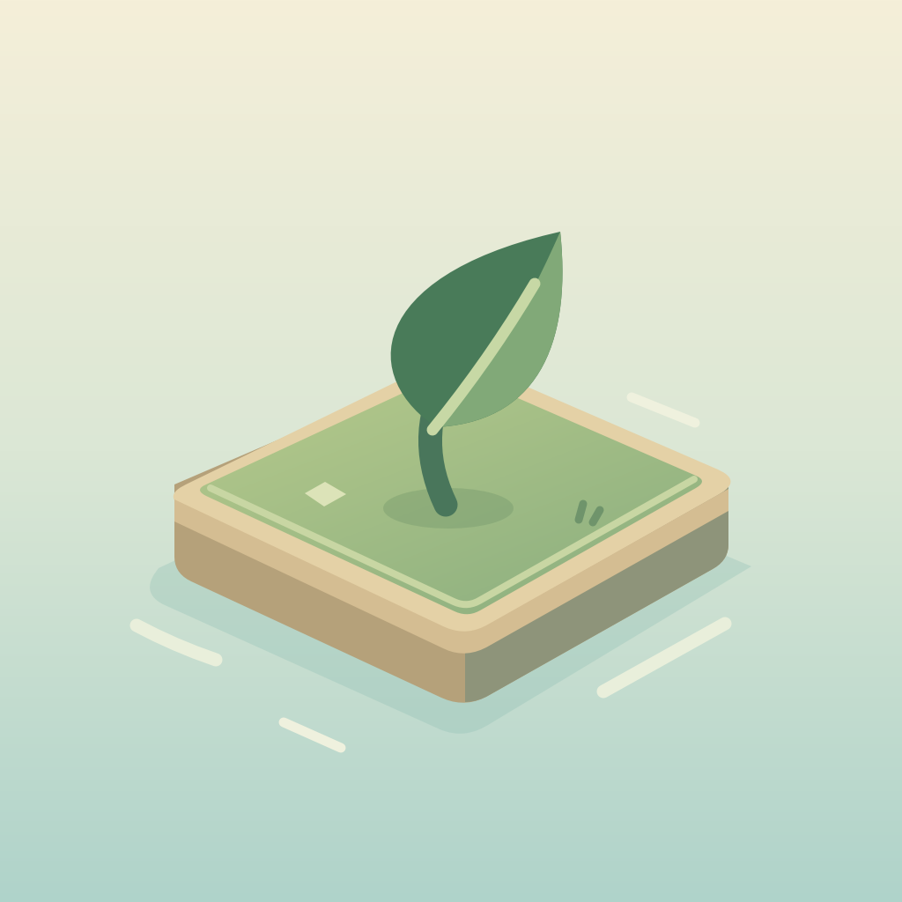

Season Islands
Support
Season Islands is a quiet puzzle game about turning 40 little islands green. Choose a season, tap a tile to preview a move, then tap it again to apply it.
Contact
Email us with questions, privacy requests, or bug reports. For a bug, include your device model, OS and game versions, and the island name or steps if relevant.
gokturkk83@gmail.com
Frequently asked questions
Where is my progress stored?
Progress and settings are saved on your device. The game has no account or cloud save. Deleting the app and its data can remove your progress.
Why can’t I hear music or effects?
Raise your device volume, then check the separate Music and Ambience and effects settings. Each group has its own mute switch and volume level.
How do I change the language or choose an island?
Open Settings and choose Language for English or Turkish, or Level to revisit an island you’ve unlocked.
Can I play without a move limit?
Yes. Choose Easy under Settings → Difficulty and start or restart a level to play with unlimited moves.
Privacy
The game works offline and requires no account. Read the privacy policy.
Destek
Season Islands, 40 küçük adayı yeşertmeye çalıştığın sakin bir bulmaca oyunu. Mevsimini seç, ilk dokunuşta hamleni gör, ikinci dokunuşta uygula.
İletişim
Oyunla ilgili soruların, gizlilik taleplerin veya hata bildirimlerin için bize yaz. Hata bildiriyorsan cihaz modelini, işletim sistemi ve oyun sürümünü, varsa bölüm adını ve soruna yol açan adımları ekle.
gokturkk83@gmail.com
Sık sorulan sorular
İlerlemem nerede saklanıyor?
İlerleme ve ayarlar cihazında saklanır. Oyunda hesap veya bulut kaydı yoktur. Uygulamayı verileriyle birlikte silersen ilerlemen de silinebilir.
Müzik veya efekt sesi neden gelmiyor?
Cihazının sesini artırıp Ayarlar’da Müzik ile Ambiyans ve efektler bölümlerini kontrol et. İki grubun da ses seviyesi ve sessize alma seçeneği ayrıdır.
Dili nasıl değiştiririm veya bir ada seçerim?
Ayarlar → Dil bölümünden Türkçe veya İngilizceyi seç. Daha önce açtığın bir adaya dönmek için Ayarlar → Bölüm’ü kullan.
Hamle sınırı olmadan oynayabilir miyim?
Evet. Ayarlar → Zorluk bölümünden Kolay’ı seçip bir bölümü başlat veya yeniden başlat.
Gizlilik
Oyun çevrimdışı çalışır ve hesap gerektirmez. Gizlilik politikasını oku.